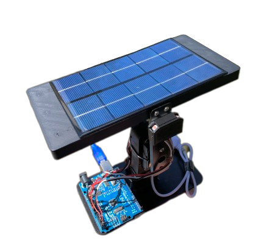
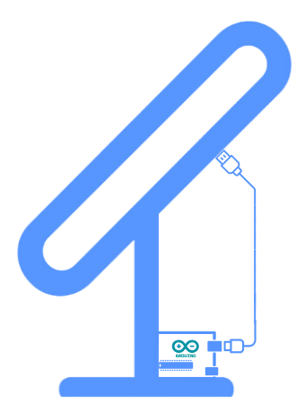

Smart Solar Panel (SSP)
Placa Solar Inteligente para consumo eficiente de energia solar através do reconhecimento do maior foco luminoso
visualizar bannerO que é a Smart Solar Panel?

Como essa Placa Solar Smart funciona?
A SSP recebe valores vindos da leitura de seus 2 sensores LDR, essa leitura passa pelo Arduino que executa a o código programado e dispara a ação para o servo motor, o servo motor por usa vez altera a posição do braço da placa de acordo com o maior foco de luz.
O sistema é alimentado pela própria geração de energia elétrica da placa solar.